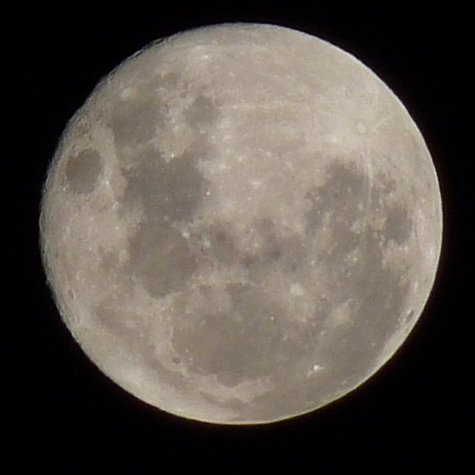

Luna
La Luna es el satélite natural de la Tierra y es el quinto satélite más grande del sistema solar. Tiene una superficie cubierta de cráteres causados por impactos de meteoritos y volcanes extintos. La Luna tiene una influencia significativa en las mareas y en el clima de la Tierra. Además de su influencia en la Tierra, la Luna también ha sido objeto de exploración humana y robótica desde la década de 1960.
Tabla de datos
| Característica | Valor |
|---|---|
| Distancia a la Tierra | 384,400 km |
| Diámetro | 3,474 km |
| Masa | 7.35 × 10^22 kg |
| Gravedad | 1.62 m/s² |
| Temperatura media | - |
Las misiones Apollo llevaron a los primeros humanos a la Luna en la década de 1960 y 1970, y las misiones espaciales posteriores han continuado estudiando la Luna y su geología. Se cree que la Luna se formó hace aproximadamente 4.500 millones de años como resultado de un impacto gigante entre la Tierra y un protoplaneta llamado Theia.